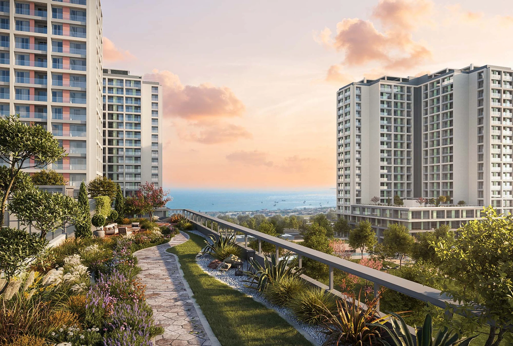

Kuzey Adalar Kartal
A coastal residential development in Kartal overlooking the Marmara Sea and the Princes’ Islands. Its published design combines homes, landscaped gardens, social facilities and ground-level shopping spaces.
Photo gallery

Gallery includes September 2026 construction photographs and architectural illustrations. Each image is labelled separately.
Living spaces
The project presentation includes a large shared garden, terraces, indoor sports spaces and shopping and dining areas. The current construction photographs in this gallery are from September 2026.
Kartal · Istanbul
Kartal, on Istanbul’s Asian side. The project website highlights Marmaray access and the coastal setting; compare the exact home’s outlook and your daily routes during a visit.
Choose your home
Request the current apartment selection, price and payment options. Compare the exact unit, view and included services before arranging your purchase.